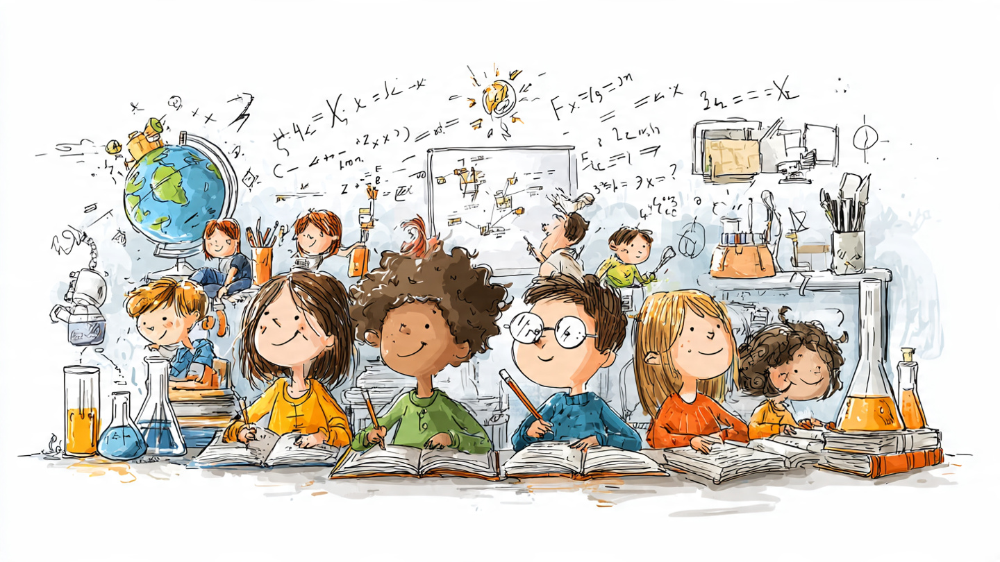

You Go to School! 🏫
School is where you learn new things. You learn your ABCs and your 123s!
📖
So Much to Learn!
You can learn to read. You can learn to count. You can learn to draw and sing and play!
What do YOU like to learn?
🎨
Everyone Learns Differently!
Some kids learn fast. Some kids learn slow. That is OK! We all learn in our own way.
⭐
What Do You Learn at School? 🏫
At school, you learn reading, writing, and math. You also learn how to share, take turns, and be a good friend. Those are all important things!
But What Else Could You Learn?
Some people think kids should also learn things like cooking, building, and how computers work. These are things you will need when you grow up!
Right now, every kid in your grade learns the same things at the same speed. But not everyone learns the same way.
What If School Was Different?
Imagine if you could learn math at YOUR speed. If something is easy, you move ahead. If something is tricky, you get extra help. Some new computer programs can do this!
What Would YOU Add?
If you could add one thing to school, what would it be? Cooking? Drawing? Building robots? Think about it!
Are Schools Teaching the Right Stuff? 📚
Here is a question nobody asks you at school: are you learning the right things? Grown-ups decided what you should learn, but some people wonder if those decisions are still good ones.
The Big Numbers
In California, the government spends about $23,519 for each student every year. That is a LOT of money. It pays for teachers, buildings, buses, lunches, and everything else at school.
But here is the surprising part: when California tests all its students in math, only about 1 out of every 3 kids passes. That means 2 out of 3 kids are not meeting the goal.
Why Everyone Learns the Same Thing
About 15 years ago, most states agreed on rules called "Common Core." The idea was that every kid in every state should learn the same stuff at the same time. That way, if your family moved from Texas to California, you would not be behind or ahead.
It made sense, but it also means your teacher has to follow a schedule. Even if half the class is not ready for the next lesson, the schedule keeps moving.
Could Computers Help?
Some companies have built computer tutors that can teach at YOUR speed. One program called Khanmigo costs only $15 per student per year. In one study at Harvard, students who used an AI tutor learned more than twice as much as students in a regular classroom.
But that study used college students, not elementary schoolers. And a computer cannot tell if you skipped breakfast or need glasses. Your teacher can.
What Skills Will Matter?
Think about what grown-ups do at work. They solve problems, work with other people, communicate ideas, and figure things out when something goes wrong. School teaches some of these skills, but a lot of the day is spent memorizing facts that you could look up in two seconds on a phone.
Maybe the question is not "are you learning enough math?" Maybe it is "are you learning to think?"
$66,250 Per Math-Proficient Student
California allocates $23,519 per student annually when all funding sources are counted. In the 2023-24 CAASPP assessment, 35.5% of students met the state standard in math. Divide one by the other: $66,250 per student who actually passes. More than a year at Stanford ($65,910 for 2024-25).
For economically disadvantaged students, math proficiency drops to 23.4%, pushing the cost per proficient student above $100,000. Nobody in state government publishes these ratios.
Per-pupil spending divides total budget by total students. Per-outcome spending divides total budget by students who meet the goal. The gap between these two numbers reveals how efficiently the system converts money into results.
What Common Core Promised
Starting in 2010, 46 states adopted the Common Core State Standards. The premise: if every state agrees on what students should know at each grade level, a family moving from Ohio to Oregon will not find their kid a year behind. Standards as a floor nobody falls through.
A decade later, the Brown Center and C-SAIL research project found NAEP performance changed by only plus or minus 2 scale points. Researcher Tom Loveless wrote that "student achievement is, at best, about where it would have been if Common Core had never been adopted." Standards defined what students should know. Nobody solved how to get them there.
The AI Tutoring Experiment
At Harvard in 2023, 194 students split between a traditional classroom and an AI tutor. The AI group's learning gains more than doubled. Khan Academy's Khanmigo now serves 1.5 million students across 795 districts at $15 per student per year.
Cost per additional proficient student = $15 / 0.045 = $333
Compare to the existing system's $66,250.
That is a 200:1 ratio. But it assumes a 4.5-point gain that has not been demonstrated at scale yet.
The Catch
The Harvard study used college students who chose to take physics. Not fourth graders in a Title I school. Khan Academy's 30-minutes-per-week benchmark requires a functioning device, reliable internet, and a motivated student. In California, 65% of tested students qualify as economically disadvantaged. Each prerequisite filters out the students who need help most.
There is also the question of what AI optimizes for. Engagement metrics look great when the system adjusts difficulty to keep you in a flow state. But feeling challenged and actually learning are not the same thing.
When only motivated students use a voluntary tool, the results look better than they would if everyone used it. Students who choose 30 extra minutes of math practice per week might already be the ones who would improve anyway.
What Schools Actually Do Well
Before dismissing the current system, consider what it provides beyond test scores. School meals, mental health support, socialization, and a safe place for seven hours a day. A student who scores "not proficient" in math but received counseling, hot lunch, and learned to collaborate with 30 classmates received real value that does not appear in proficiency rates.
Pandemic-era remote learning showed what happens when you remove school's social infrastructure: learning loss, isolation, mental health crises. An AI tutor cannot teach you to sit next to someone you disagree with and still learn from them.
The Two-Sigma Problem and Its Discontents
In 1984, Benjamin Bloom published a finding that has shaped education policy for four decades: students receiving one-on-one tutoring performed two standard deviations above conventionally taught peers, a shift from the 50th to the 98th percentile. Bloom called it "the 2 Sigma Problem" because we knew what worked and could not afford to do it.
The finding has never been independently replicated at that magnitude. Kurt VanLehn's 2011 meta-analysis in Educational Psychologist found the average effect of human tutoring to be 0.79 standard deviations, not 2.0. Significant (roughly the 79th percentile), but not miraculous. Bloom's original study may have reflected optimal conditions that are unreplicable at any scale.
50 million K-12 students × $15/hour × 4 hours/day × 180 school days = $540 billion/year
(More than the entire current U.S. K-12 education budget. For context, Sweden's GDP is ~$600 billion.)
What the AI Studies Actually Show
The strongest evidence comes from Gregory Kestin and Kelly Miller at Harvard (fall 2023): 194 students in Physical Sciences 2, split between active learning (the pedagogical gold standard) and a purpose-built AI tutor. The AI group scored a median 4.5 on post-tests versus 3.5 for the active learning group. Learning gains more than doubled.
At scale, Khan Academy reports greater-than-expected gains from 30 minutes of additional weekly practice. Khanmigo reached 1.5 million licensed learners across 795 U.S. districts in 2024-25. A Johns Hopkins RCT of IXL Math met ESSA Tier 1 requirements.
The limitations are significant. Kestin's sample was 194 self-selected Harvard undergraduates. Khan Academy's data comes from voluntary usage (selection bias). No independent RCT has tested AI tutoring with the bottom quartile in a high-poverty K-12 school.
Personalized AI systems must classify students: this one needs remediation, that one is ready for acceleration. Every classification is a prediction about capacity, made by systems trained on historical data that reflects existing inequities. A student from a low-income district, statistically more likely to be flagged for remediation, might receive a narrower path: more drill, less exploration, fewer challenging problems.
Standardization, for all its inefficiency, promises every child the same material. Personalization promises each child what the algorithm thinks they can handle. Those are not the same promise, and the gap between them is an equity question that the ed-tech industry has not meaningfully addressed.
The Data Privacy Problem
Every adaptive learning system builds a model of each student: what they know, what they struggle with, when they disengage. FERPA (1974) and COPPA (1998) were written before AI tutoring existed. When InBloom, the $100 million Gates Foundation-backed student data platform, collapsed in 2014 after parent protests, millions of students' data had already been aggregated across state lines.
No federal regulation addresses AI-generated learner models for minors. California's SOPIPA does not address what happens when an AI system infers a learning disability from behavioral patterns before any human makes that diagnosis. If a school uses that inference for placement, an algorithm has made a consequential decision about a child's educational trajectory without due process.
What Would Actually Work
The districts showing the fastest gains are not using AI. Compton Unified invested in in-class human tutors and expanded after-school programs. Fallbrook Union credited counselors, social workers, and behavior technicians. Benicia Unified funded districtwide professional development and math coaches. Real people, in buildings, working with children.
The honest answer: we do not yet know whether AI tutoring helps the students who need it most. Until someone runs the trial in Compton (not Cambridge), the equity case for AI personalization remains theoretical. The cost case is compelling. The evidence case is not there yet.
$66,250 Per Proficient Math Student
California's 2024-25 education budget allocates $23,519 per student when all funding sources are counted ($17,653 from Proposition 98 General Fund alone, per the CDE budget summary). In the 2023-24 CAASPP assessment, 35.5% of students met or exceeded the state standard in math. The division nobody in Sacramento puts on a press release: $66,250 per math-proficient student. More than a year's tuition at Stanford ($65,910 for 2024-25).
For economically disadvantaged students, math proficiency was 23.4%, pushing the cost per proficient student above $100,000. Districts report spending and proficiency rates separately. They do not divide one by the other, because the result indicts the entire system: the standards, the curricula, the funding formulas, and the political structures that made accountability optional.
What Common Core Delivered
Between 2010 and 2013, 46 states adopted the Common Core State Standards. Today, only 41 plus D.C. still claim alignment; four never adopted (Alaska, Texas, Virginia, Nebraska), four formally repealed. Brown Center analyses and the C-SAIL research project found NAEP changes of plus or minus 2 scale points. Researcher Tom Loveless wrote in National Affairs: "Student achievement is, at best, about where it would have been if Common Core had never been adopted." EdReports.org found that of dozens of curricula rated for standards alignment, only two had empirical evidence of boosting learning. Alignment, not effectiveness, was the screen.
The AI Tutoring Evidence
At Harvard in fall 2023, Gregory Kestin and Kelly Miller split 194 students between active learning and a custom AI tutor. The AI group's median post-test score was 4.5 versus 3.5 for the active learning group. Learning gains more than doubled. Khan Academy's Khanmigo reached 1.5 million learners across 795 districts at $15/student/year. A Johns Hopkins RCT of IXL Math met ESSA Tier 1 requirements.
The caveats deserve their full weight. The Harvard study involved self-selected college undergraduates, not K-12 students. Khan Academy's data comes from voluntary usage (introducing selection bias). The 200:1 cost ratio ($66,250 vs. $333 per additional proficient student) rests on a hypothetical 4.5-point proficiency gain that no Khanmigo deployment has demonstrated at scale. If the real gain is 1 point, the ratio drops to 44:1. If zero, the ratio is infinite.
The Standardization Defense
Before personalization, a student in Mississippi was held to different expectations than one in Massachusetts. In practice, low-income states defined "proficient" at levels high-income states considered below grade level. Common Core at least forced agreement on what "proficient" meant.
Personalized AI systems classify students, and every classification is a prediction about capacity, trained on data reflecting existing inequities. A Black student in a low-income district, more likely to be flagged for remediation, might receive a narrower path: more drill, less exploration. Standardization promises every child the same material. Personalization promises each child what the algorithm thinks they can handle. Those are fundamentally different promises.
What Teachers Know That AI Does Not
A composite drawn from teacher interviews: a fourth-grade teacher with 31 students, seven with IEPs, four English Language Learners, two mid-year transfers with no records. Her pacing guide is one week ahead of where her students actually are. She can differentiate for three groups, maybe four on a good day. She has nine groups in that room.
AI might provide diagnostic data. It will not sit with a student after class and realize the real problem is he cannot see the whiteboard and his family cannot afford glasses. It will not notice he has been quieter since October, or that he only struggles on days he arrives without breakfast.
Where Schools Are Actually Improving
Districts showing the fastest gains in 2023-24 CAASPP results invested in human infrastructure: Compton Unified expanded in-class tutors and after-school programs. Fallbrook Union credited counselors and behavior technicians. Benicia Unified funded math coaches and professional development. Not a single top-improving district credited AI.
The honest conclusion: AI tutoring evidence is promising but early, limited to non-representative populations, and carries unresolved equity and privacy risks. The districts actually moving the needle are investing in people, not platforms. Whether that changes in five years depends on trials that have not been run, in schools where the need is greatest.
- California Department of Education, "2023-24 California Statewide Assessment Results" (October 2024)
- CDE, 2024-25 Budget Summary: $23,519 per-pupil
- Tom Loveless, "How the Common Core Went Wrong", National Affairs
- Benjamin Bloom, "The 2 Sigma Problem" (1984), Educational Researcher 13(6), 4-16
- Kurt VanLehn, "Relative Effectiveness of Human Tutoring, ITS, and Other Tutoring Systems", Educational Psychologist 46(4), 2011
- Gregory Kestin & Kelly Miller, "AI Tutoring Outperforms Active Learning", Harvard (2024)
- Khan Academy, Annual Report: 1.5M Khanmigo learners, 795 districts
- Johns Hopkins/IXL, ESSA Tier 1 RCT